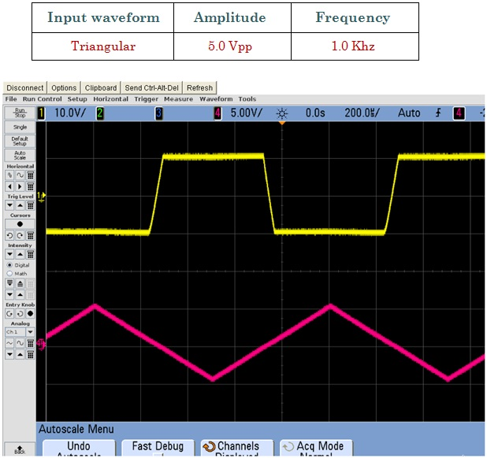

Ok, some math's to explain what's going on! Since the node voltage of the operational amplifier at its inverting input terminal is zero, the current, i flowing through the capacitor will be given as:
Therefore, the output voltage VOUT is a constant - Rƒ C times the derivative of the input voltage Vin with respect to time. The minus sign indicates an 180° phase shift because the input signal is connected to the inverting input terminal of the operational amplifier.
One final point to mention, the Op-amp Differentiator circuit in its basic form has two main disadvantages compared to the previous integrator circuit. One is that it suffers from instability at high frequencies as mentioned above, and the other is that the capacitive input makes it very susceptible to random noise signals and any noise or harmonics present in the source circuit will be amplified more than the input signal itself. This is because the output is proportional to the slope of the input voltage so some means of limiting the bandwidth in order to achieve closed-loop stability is required.
|  |